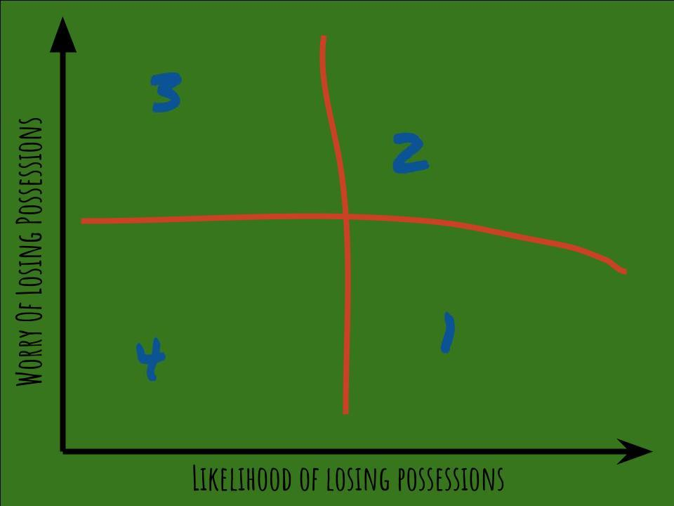

Four Categories
Are you one of those people who always seems to be losing things? Yeah, me too.
Here’s a brief list, from memory, of the (known) victims in the past six months:
- My bear hat knitted for me by Angela Mudge
- My nice reverable jacket
- My bike helmet
- Apartment keys
- My colorado buff
- My special pen
- My friend’s tent bag
- My replacement apartment keys
- … you get the point.
I’ve always believed that there are two types of people in the world:
- Those that lose things regularly;
- Those that just never seem to lose anything. Goddamnit! How do you do that?!
After spending a lot of time with people in San Francisco, I realized that my categorization could be more nuanced. There is an additional dimension to my categorization: the what-have-i-lost worry factor.
Some people seem spend an inordinate amount of time worrying that they are going to lose something. This is a closely related group of people to the faffers (see bio).
I am convinced that these two categories neatly characterize humankind. To illustrate, I have made this handy graph.

The two dimensions combine to form four categories that can best be understood with a real-world example: checking of a hotel room.
Category 1: The Iain never checks under the bed, usually there’ll be something there. No doubt my nice reversable jacket is under one somewhere.
Category 2: The Justified Pedant will always check under the bed, twice. Often they’ll find something of theirs there. And maybe my hat. Of course, they will have missed the sock tucked behind the door.
Category 3: Dr Reliable will always check under the bed. There’s never anything under it. But they don’t let that stop them.
Category 3: The Unicorn is the mythic person who never checks under the bed and there is never anything under it. Scientists are still searching for one of these creatures in the wild.
Which one are you?